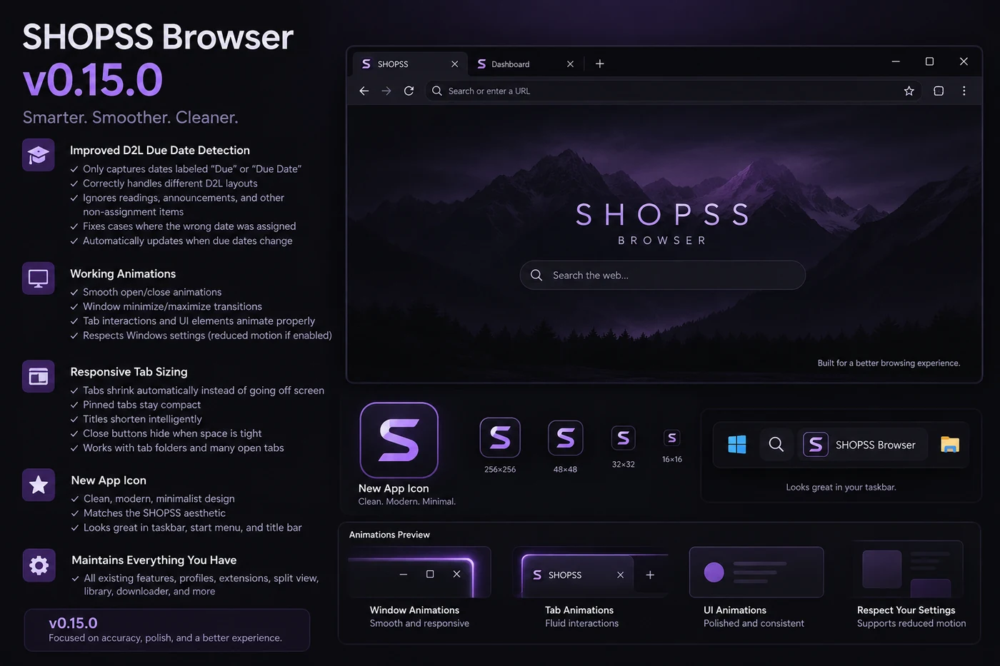

CLOUD
LIVE
DigitalOcean + Ubuntu
The VPS layer hosting the site, Discord automation, and server-status collector.
Projects, systems, and experiments I actually use.
DAILY DRIVER
A custom Windows browser shell built in C# / WPF on Microsoft WebView2. It combines the everyday browser features I use with profiles, Split View, extension support, server telemetry, security hardening, automatic updates, and college due-date reminders.

SELECTED WORK
My custom Windows browser built around WebView2 with isolated profiles, Split View, Chromium extensions, responsive tabs, a VPS status HUD, college reminders, security hardening, and a self-update channel hosted on shopss.me.
A lightweight Windows desktop companion with live widgets, customizable file organizer zones, tray controls, and optional self-hosted server monitoring.
A multi-server Discord bot that automatically turns Valve CS2 match data into polished team reports with live match card previews.
A lightweight Windows tray app that keeps a custom Discord activity running and reconnects automatically, now with a live preview page.
This site: hosted on a VPS, served by Nginx, and automatically updated from GitHub.
INFRASTRUCTURE
The site, browser, bots, monitoring, desktop app, and deployment flow all connect through a small stack built to stay lightweight and easy to maintain.
The VPS layer hosting the site, Discord automation, and server-status collector.
Static site delivery, HTTPS, redirects, and the optional public status endpoint.
Source control plus lightweight services and timers that keep deployments and monitoring running.
Native Windows widgets, desktop organizer zones, tray controls, and the public installer build.
The automation layer behind match tracking, Discord integrations, and lightweight utility scripts.
Small persistent data stores, server telemetry, and privacy-friendly site analytics.
LINKS